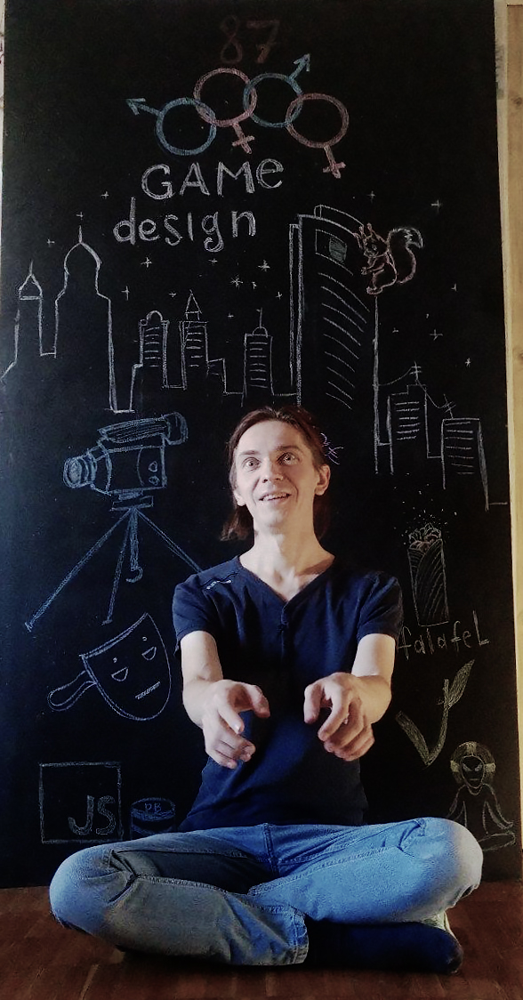

I like to explore what happens at the edges between things. I have a Master's (well, what used to be called a Specialist) degree in Math and a Master's degree in Psychology.
Throughout my life, my real passion has been Contemporary art, and I have continuously pursued self-education and learn-by-doing in this field. I have created many artworks that combine data visualization, cognitive and positive psychology, spiritual practices, and contemporary art.
I also do urban exploration in cities. I love finding intersections between nature and the city while walking or riding a kick scooter.
